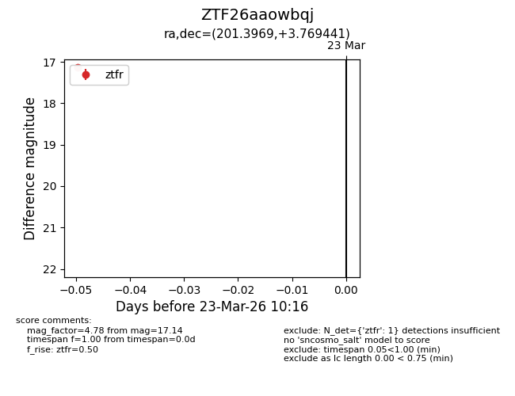
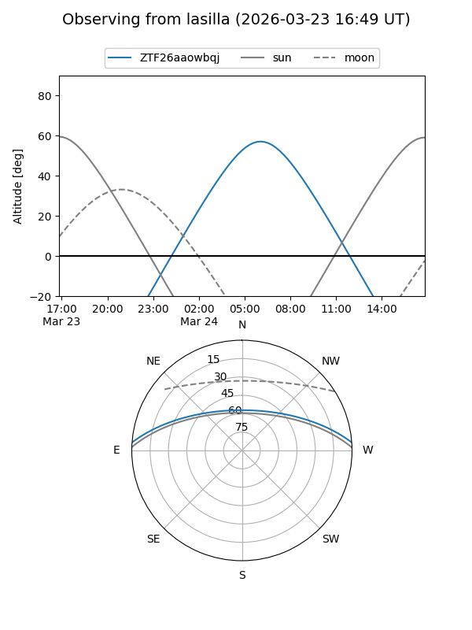
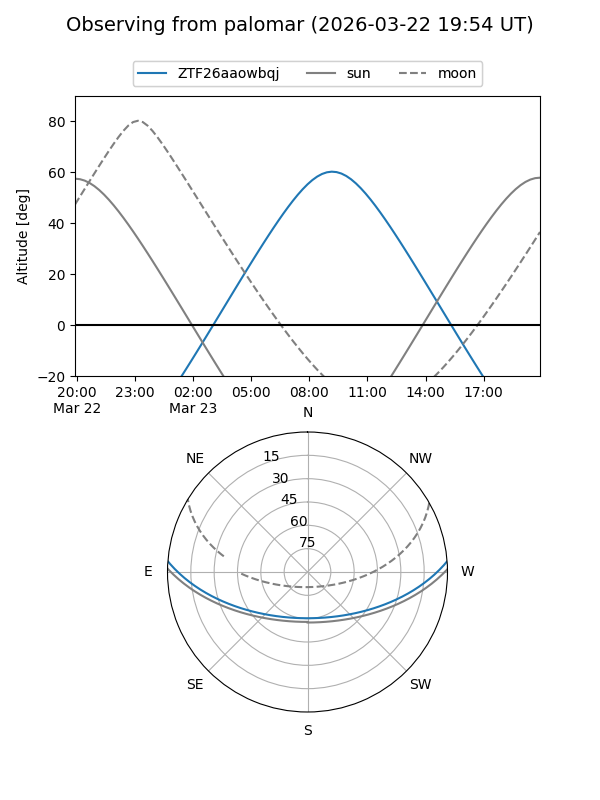

ZTF26aaowbqj
Target ZTF26aaowbqj at 2026-03-23 10:18
Aliases and brokers:
FINK: link
Lasair: link
ALeRCE: link
alt names
ZTF26aaowbqj (ztf,fink_ztf)
Coordinates:
equatorial (ra, dec) = 201.3969,+3.76944
equatorial (HMS+DMS) = 13:25:35.25,+03:46:09.99
galactic (l, b) = (323.6599,+65.25770)
Flags:
Photometry:
last ztfr=17.14
1 ztfr detections
Lightcurve

Visibility


Additional plots